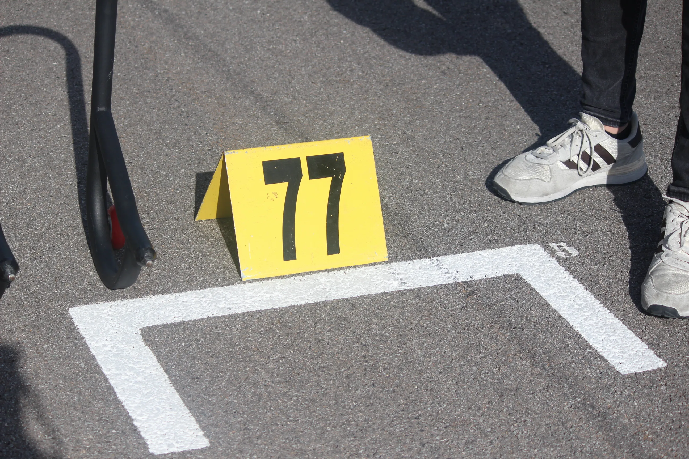
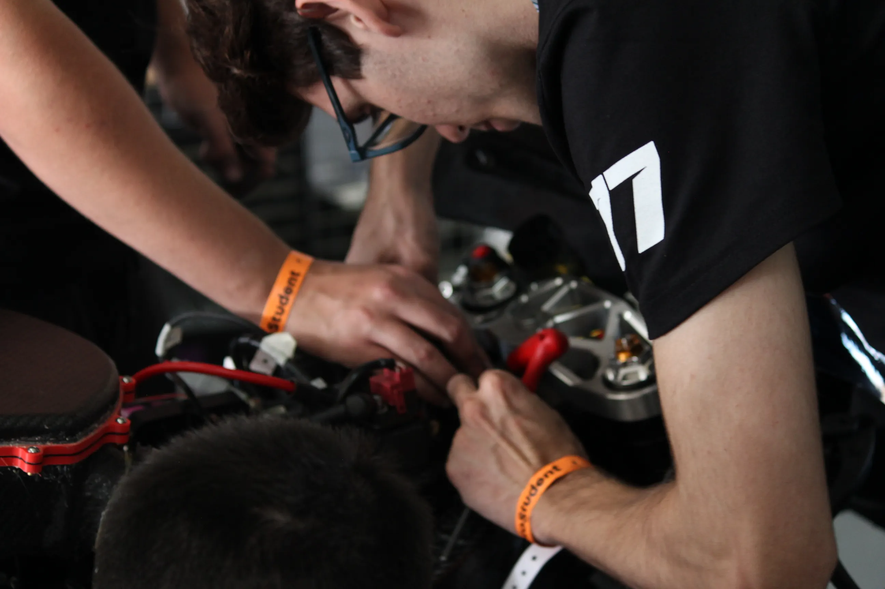
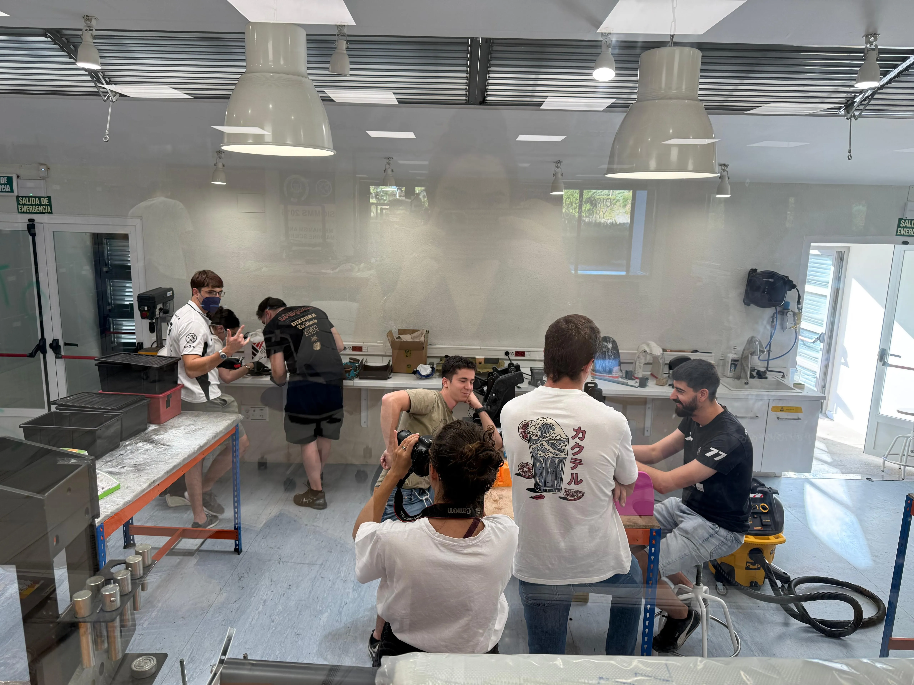
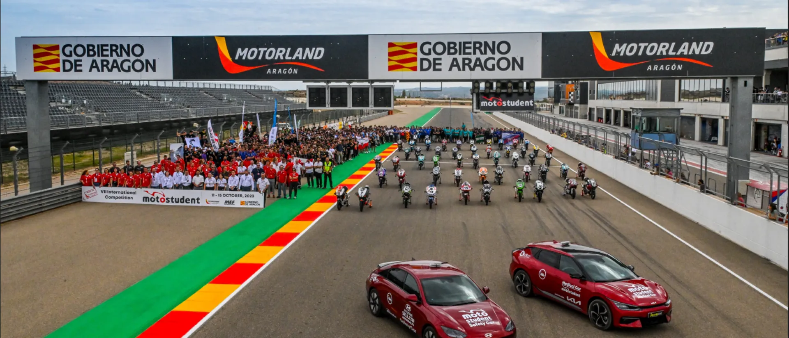

MORE THAN
ENGINEERING
We are MotoMaqLab, the motorcycle team of UC3M. Students of the University Carlos III of Madrid united by passion, speed, and the challenge of building the motorcycle of the future.
Our Philosophy
We don't just build motorcycles. We shape the next generation of engineers.

Passion for Motorsport
Our motivation is born in the circuits. The adrenaline of the track pushes us to develop increasingly bold solutions, applying Moto3 high-performance principles.

Precision Engineering
We manufacture using real industrial tools. We optimize topologically with Altair HyperWorks and mold carbon fiber using 3D printed water-soluble cores (WSM-170).

Teamwork
Our departments operate as a true racing team. Students from different faculties of UC3M coordinate under the supervision of the MAQLAB group to reach the goal.
Our Challenge in MotoStudent
Pure engineering from UC3M competing at the highest level

Since our foundation in 2009, MotoMaqLab UC3M represents the University Carlos III of Madrid in the prestigious international competition MotoStudent. We were born with a clear goal: bringing theoretical classroom knowledge to the demand, pressure, and adrenaline of the real pit lane.
Throughout these years, more than 70 engineering students have poured their talent into designing, simulating, and manufacturing pure racing prototypes from scratch. Our technical consistency has led us to win 6 official awards throughout our history, standing out among universities worldwide in technological innovation, industrial design, and project development (MS1 Phase).
We are not just a group of students; we are future engineers proving our capabilities on the asphalt of the FIM MotorLand Aragón Circuit.
International Competition
We face more than 86 teams from 20 different countries at the official venue: the iconic MotorLand Aragón circuit, Spain.
Real Engineering
Design, simulation, manufacturing, and dynamic tests. MotoStudent demands mastering all phases of motorcycle development.
MotoStudent 2025–2027
Our MS9 will be the next challenge. We are working on a prototype that will combine innovation in composite materials and advanced aerodynamics.
Our History
From the classroom to the pole position.
THE ORIGIN
Following the creation of MotoStudent in 2009, the team was founded with the help of the MAQLAB research group at UC3M. The team's first prototype, the MS1 (a 2-stroke with a tubular chassis), won the best industrial innovation award for incorporating an innovative adjustable TeleLever suspension system.

RESTRUCTURING
This year saw a profound restructuring of the team and its work philosophy. We managed to compete in MotoStudent III with the MS3, evolving to a 4-stroke engine while maintaining a solid and reliable tubular chassis base.

MS4: BEST DESIGN AWARD
In Motostudent IV, we made a spectacular technological leap. The MS4 won the first prize for best industrial design for its monobloc chassis and swingarm entirely made of aluminum. It also obtained two silver medals (second prizes) for innovation and industrial project.

MS6: MULTIPHYSICS INNOVATION
The team participated in MotoStudent VI with its MS6, highlighting a spectacular carbon fiber swingarm. We won the Altair Innovative Challenge 2020 thanks to the multiphysics optimization of the motorcycle. In this prototype, we applied pioneering composite manufacturing methods using 3D printed water-soluble cores (Ultem 1010).

MS7: THE CARBON CHALLENGE
Our MS7 project turned the competition around by presenting a carbon fiber tubular chassis, unique in the world. With this risky and demanding technical bet, we obtained the fifth absolute place in the innovation category, pushing the limits of our workshop's engineering.

MS8: THE STAR PROJECT
The MS8 (Moto3 category) introduced our definitive achievement: a hollow twin-spar carbon fiber chassis. The Key: Total structural and aerodynamic integration. The structure not only supports the motorcycle but also acts as an air intake duct, optimizing internal flow and drastically reducing overall weight.
This technical feat, which we presented institutionally to the University Rector, earned us the 2nd Place in Pitch Presentation, highlighting the industrial viability and defense of the project.

Honours & Awards
Industrial Innovation
Adjustable TeleLever suspension system | MS 1 (2009)
Industrial Design
Integral aluminum monobloc chassis and swingarm | MS 4 (2016)
Altair Innovative Challenge
Structural optimization and new composite manufacturing methods with 3D printed core | MS 6 (2020)
Pitch Presentation
Recognition for communication, industrial viability, and project & aerodynamic defense | MS 8 (2025)
Industrial Innovation
Advanced development of aluminum monobloc chassis and workshop process improvement | MS 4 (2016)
Industrial Project
Defense of the serial production model and cost structure of the racing prototype | MS 4 (2016)